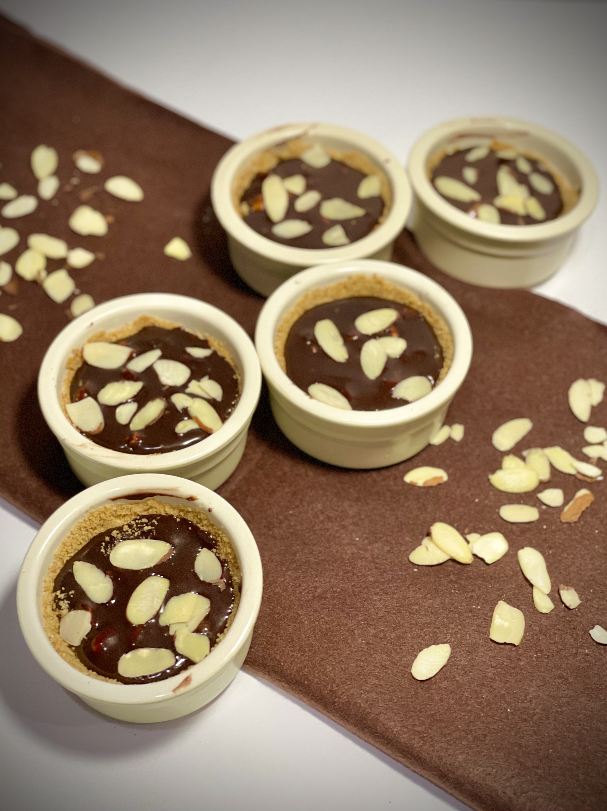

Chocolate Almond Tart
What is it?
This chocolate-almond tart consists of two main elements, a crumbly, buttery, and perfectly sweet graham cracker crust and a rich, smooth, velvety chocolate filling. The filling has pieces of almond giving the perfect bit of texture, and is topped with sliced almonds for a more pleasing look. This perfect combination in a ramekin or any dish makes a perfect heart-warming dessert for any guests or just for yourself to enjoy.
Ingredients:
Chocolate Filling
- 16 oz or 2 cups semisweet chocolate
- Sliced almonds optional for serving
- Roughly chopped almonds
- 1 1/2 cups coconut milk
- 1/2 tbsp vanilla extract
- 1/2 tsp salt
Graham Cracker crust
- 12 Graham Crackers
- 3 tbsp sugar or to taste
- 8 tbsp or 1 stick butter
Crust
- Blend Graham Crackers to fine crumbs in a food processor
- Add sugar and mix evenly
- Add butter and mix until crumbs are evenly sized and all moist with butter
- Tightly pack crust into small containers, or one big container and bake at 375F for 7 minutes
Chocolate Filling
- Chop chocolate into even chunks and place in a bowl, size isnt too important just even
- Heat the milk seperatley on stovetop until simmering
- Slowly pour milk into the chocolate and whisk till smooth
- Let cool and add vanilla and salt
- Pour to graham cracker crust, add desried toppings, and let set in fridge for 1-2 hours
- Chop chocolate into even chunks and place in a bowl, size isnt too important just even
- Heat the milk seperatley on stovetop until simmering
- Slowly pour milk into the chocolate and whisk till smooth
- Let cool and add vanilla and salt
- Pour to graham cracker crust, add desried toppings, and let set in fridge for 1-2 hours